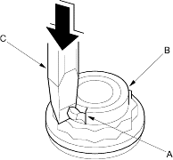
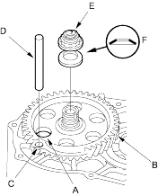

- Cut the lock tab (A) of the locknut (B) using a chisel (C).
NOTE: Keep all of the chiselled particles out of the transmission.

- Align the hole (A) of the sub-shaft 1st gear (B) with the hole (C) of the transmission housing, then inset a 8.0 mm (0.31 in.) pin (D) to hold the sub-shaft while removing the sub-shaft locknut.

- Remove the locknut (E) and conical spring washer (F).
- Remove the ATF guide cap by pushing the sub-shaft inside the transmission housing.
- Remove the 1st-hold clutch assembly by pulling and removing the sub-shaft.